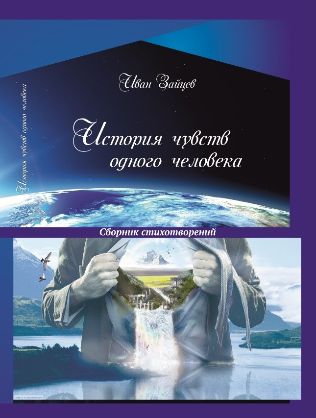

Я не поэт – попутчик музы,
Простой прохожий на её пути.
Сложилось так, что нас связали узы
Тяжёлых дней, дней трепета души!
Простой прохожий на её пути.
Сложилось так, что нас связали узы
Тяжёлых дней, дней трепета души!
(© «Історія почуттів однієї людини». І.С. Зайцев)
Купити
«Історія почуттів однієї людини» — це поетична фіксація станів,
хвилювань та внутрішніх переходів/переломів, знайомих кожному.
Ця книга не має відношення по проєкту «Практикулярій».
Це завершений этап минулого, збережений як пам'ять і досвід, що був в основному написан ще набагато раніше до 2014р. і, в основному, на "Руській" мові.
Це завершений этап минулого, збережений як пам'ять і досвід, що був в основному написан ще набагато раніше до 2014р. і, в основному, на "Руській" мові.
Ця книга не про красиві слова.
Ця книга про справжні відчуття, пережиті та усвідомлені.
Ця книга про справжні відчуття, пережиті та усвідомлені.
Для мене ця книга — відкриття самого себе.
Відкриття тих схованих глубоко у собі можливостей людини, про які він сам може і не здогадуватися.
Відкриття тих схованих глубоко у собі можливостей людини, про які він сам може і не здогадуватися.
Усвідомлення внутрішнього потенціалу неможливо без імпульсу зовні.
Тим імпульсом для меня стали почуття.
Тим імпульсом для меня стали почуття.
Я ніколи раніше не думав, що зможу написати хоч бы один стих.
Я не навчався цьому.
Я був лише посередником поміж натхненням и бумагою.
Я не навчався цьому.
Я був лише посередником поміж натхненням и бумагою.
Жодний рядок у цій книзі не був вимучений.
Навіть сумні строки — частині щасливого цілого.
Навіть сумні строки — частині щасливого цілого.
«Нам не постичь разлуки силу,
Не оценив мгновенья встреч!»
Не оценив мгновенья встреч!»
(© «Історія почуттів однієї людини». І.С. Зайцев)
«Поддавшись искренности в чувствах,
Дотла сгоревшим быть готов!»
Дотла сгоревшим быть готов!»
(© «Історія почуттів однієї людини». І.С. Зайцев)
«Прикоснувшись к лону счастья,
Будучи пропитан Раем,
Снисхожденьем потревожен,
Трепещи судьбой играя.»
Будучи пропитан Раем,
Снисхожденьем потревожен,
Трепещи судьбой играя.»
(© «Історія почуттів однієї людини». І.С. Зайцев)